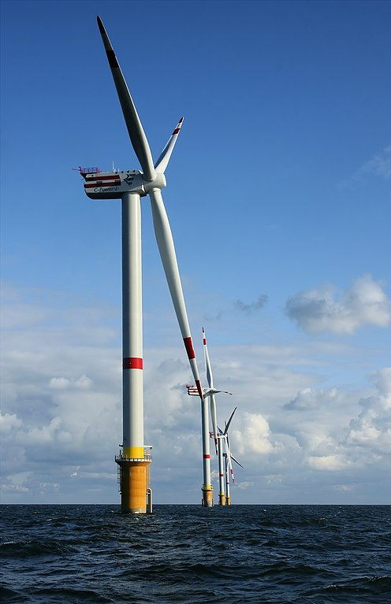
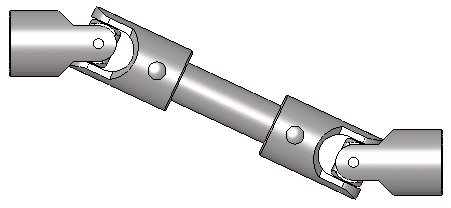
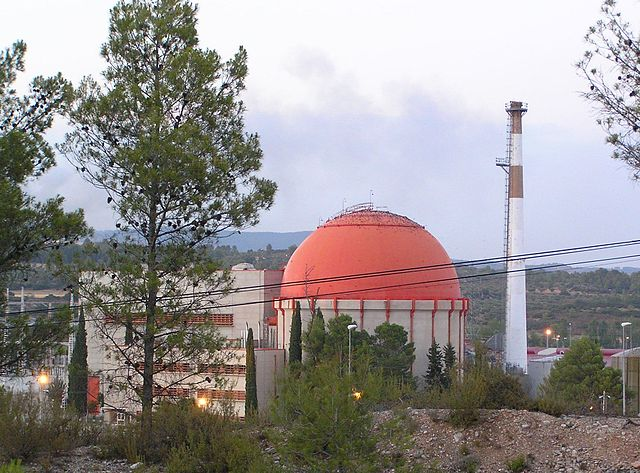
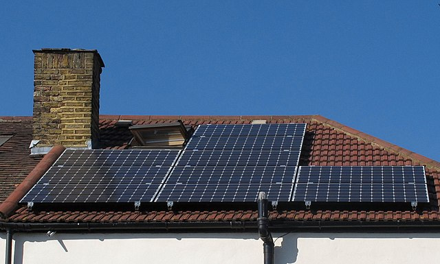

Energy¶
Energy is very important in our society because it allows us to satisfy important needs in our daily lives, such as having electricity, cooking our food, heating our houses and transporting ourselves to different places.
The excessive use of fossil fuels (oil, natural gas and coal) is generating a climate crisis that forces us to change our traditional sources of energy for less polluting and more sustainable ones, such as solar or wind energy.
We will begin by studying the different forms or manifestations of energy and what are the primary energy sources we use, to end up studying electrical energy in detail.
Index of contents:
Forms of energy¶
Energy is the capacity to do work or produce change.
There are many forms or manifestations of energy. Each has different characteristics, but all of them can be converted into work or motion, light, heat, sound or other useful effects for us.
According to the first principle of thermodynamics, energy is neither created nor destroyed, it is only transformed from one form to another.
The following are the most common forms of energy and those most commonly used.
- Potential energy
It is the energy that an object has due to its position in a gravitational field [1].
For example, an object that is in a high position has potential energy thanks to the gravity of the earth. If we drop the object, that potential energy is transformed into kinetic energy or it could drag another object doing work.
Hydraulic dams accumulate potential energy in the water when it is stored in an elevated position. The water falling from the dam transforms its potential energy into kinetic energy, which moves a turbine. Finally, the turbine moves an alternator that produces electrical energy.

Aldeadávila arch dam being released due to river flooding.¶
Raiden32, CC BY-SA 4.0 International, via Wikimedia Commons.- Kinetic energy
It is the energy that an object has due to its movement.
For example, a ball thrown at high speed will have kinetic energy and will be able to displace other objects. Wind power is the kinetic energy of moving air. When a car accelerates, the chemical energy of the gasoline is being transformed into kinetic energy. The Moon has kinetic energy when moving around the Earth. In the ocean tides we can observe how the kinetic energy is transferred from the Moon to the Earth.
Offshore wind turbines at Thornton Bank, 28 km offshore in the Belgian part of the North Sea.¶
Hans Hillewaert, CC BY-SA 4.0 International, via Wikimedia Commons.- Mechanical energy
It is the energy that is transmitted by means of the linear displacement or the rotation of a mechanical part of a machine.
For example, the shaft of a mixer motor transmits the mechanical energy of the motor to the blades. Moving up and down, an engine's connecting rod transmits mechanical energy from the piston to the crankshaft, that will turn to move the car.
Rotating cardan joint, used to transmit energy.¶
Silberwolf, CC BY-SA 2.5 Generic, via Wikimedia Commons.- Thermal energy
It is a form of energy associated with the temperature of an object. It is based on the internal movement of the atoms and molecules of the object. The higher the temperature, the faster its particles move.
This is the most degraded form of energy and it is the most difficult to transform, especially if it is at low temperatures.
All energy transformations cause losses and gradually become thermal energy due to friction.
An example of thermal energy is the transformation that occurs in a heating boiler. The chemical energy of natural gas is transformed through combustion into heat at high temperatures that is used to heat buildings.
- Chemical energy
It is the energy found in the chemical bonds of fuels, food or batteries.
To release this energy it is necessary to cause chemical reactions, which in most cases consist of combining fuels with oxygen. That's what we animals do when we convert fat and carbohydrates from food into movement and heat to stay alive. Fossil fuels are substances that produce energy by combining with oxygen in the air. For example, burning coal or gas produces thermal energy.
We also find this type of chemical energy in rechargeable or single-use batteries. In this case, the reactions do not involve oxygen.
- Nuclear energy
It is the internal energy of the atoms that is released in the reactions of fusion and nuclear fission.
Examples of this type of energy are the energy of the Sun that is produced by the fusion of its hydrogen atoms or the energy of a nuclear power plant that fissions the uranium atoms. Earth's geothermal energy also comes from the nuclear energy of the uranium within it.
José Cabrera nuclear power plant in Guadalajara.¶
Mr. Tickle, CC BY-SA 3.0 Unported, via Wikimedia Commons.- Radiant energy
It is the energy that we can find in light or in radio microwaves.
It is of fundamental importance, because it is the majority of the energy that reaches the earth thanks to the sun and that we can take advantage of with solar panels. Microwaves in kitchens convert electrical energy into radio microwaves that heat water in food.
Solar panels on the roof of a house.¶
David Hawgood, CC BY-SA 2.0 Generic, via Wikimedia Commons.- Electric energy
It is the energy associated with the movement of electrons through conductive wires. It is very easy to convert other types of energy into electrical energy and vice versa. For that reason, electrical energy is widely used to transport other forms of energy from one place to another.
For example, the mechanical energy of a wind turbine moving with the wind can be transported in the form of electric energy, easily and almost instantaneously, to a house hundreds of kilometers away. That electrical energy can be transformed back into the mechanical energy of a mixer.
Lightning from storms and electrical discharges that we experience when taking off a sweater are natural manifestations of electrical energy, but we cannot usefully harness them.
A disadvantage of electrical energy is that it cannot be easily stored, it must be consumed at the moment it is generated. In order to store electrical energy, it is necessary to convert it into chemical energy in batteries or into potential energy in pumped hydroelectric plants [2].


{kind=link}
{kind=link}
{kind=link}
{kind=link}
{kind=link}
Energy transformation¶
In conversions from one form of energy to another, several intermediate steps are often taken to produce the form of energy we desire.
Here are some examples of common conversions between forms of energy:
- Potential energy of water from a dam into electrical energy
- The potential energy of water from a dam -> the water is dropped so that it has kinetic energy -> a turbine converts this energy into rotation of a shaft -> rotation of the shaft moves an alternator -> an alternator converts the mechanical energy transmitted by the shaft into electrical energy
- Chemical energy of natural gas into electrical energy
- The chemical energy of natural gas -> is converted to thermal energy inside the burner of a turbine -> the thermal energy is converted into turbine rotation -> an alternator converts the mechanical energy of the rotating shaft into energy electric.
- Nuclear power from uranium into electric power
- Nuclear power from uranium -> is converted to thermal energy inside the nuclear reactor -> thermal energy is converted to superheated water vapor -> a steam turbine converts energy from water vapor to mechanical energy of spin of a shaft -> an alternator converts the mechanical energy of the shaft into electrical energy.
- Chemical energy of gasoline into kinetic energy of a car
- The chemical energy of gasoline -> is converted into thermal energy inside the combustion chamber -> that thermal energy increases the pressure of the gas and moves a piston producing mechanical energy -> mechanical energy is transmitted to the wheels which rotate moving the automobile providing kinetic energy.
- Wind power in heat for cooking
- The kinetic energy of the wind -> moves the blades of a wind turbine producing mechanical energy -> the mechanical energy of rotation is applied to an alternator that converts it into electrical energy -> the electrical energy arrives at our home where the resistance of the glass ceramic hob converts it into thermal energy for cooking.
Energy sources¶
An energy source is a natural resource from which energy can be obtained. Depending on their availability we can distinguish between renewable energy sources and non-renewable energy sources.
- Non-renewable energy sources
These energy sources are depleted as we consume them because there are only limited reserves.
Most of these energy sources are based on chemical energy that plants and animals captured from the Sun millions of years ago.
A major problem generated by this type of energy sources is pollution, global warming and the climate crisis.
- Coal. It is the source of energy that produces the greatest environmental pollution and greenhouse gases.
- Petroleum. It is currently the most widely used for all kinds of uses, from transportation to heating homes.
- Natural gas. It is the least polluting of the three types of fossil energy sources.
- Nuclear. This energy produces few greenhouse gases, but it does generate significant amounts of polluting radioactive waste.
- Renewable energy sources
These sources of energy are considered inexhaustible and, with the appropriate techniques, they can be used without limit.
The problem with most renewable energies is that they are intermittent, so it is necessary to store surplus energy to be able to use it later.
- Solar. It is radiant energy that comes from nuclear fusion reactions that occur within the Sun.
- Wind. The energy of the wind comes from the heating by the Sun of the air masses in the atmosphere.
- Hydraulics. It comes from the potential energy of the river water accumulated in the dams. It has the advantage of being storable.
- Geothermal. It comes from the heat of the earth produced by the nuclear reactions inside it. It has the advantage of always being available, although it can only be used in some volcanic areas on Earth.
- Biomass. It is the chemical energy that we can obtain from trees or from biological waste that can be converted into biogas.
- Tidal. It is the energy that can be extracted from sea water thanks to the movement produced by the tides.
Electric energy¶
Electrical power is not a primary energy source, but must be generated from other primary energy sources. The reasons why electricity is generated are based on the fact that it is very easy to transport, easy to control, and easy to convert into other forms of energy efficiently.
{kind=link}
- Advantages of electric power
- It can be easily obtained from other forms of energy (mechanical, chemical, calorific, radiant, etc.).
- It can be easily transported over long distances.
- Transport is efficient and consumes little energy.
- It is easily convertible into other forms of energy.
- It can be controlled very easily.
- It is very clean and does not produce pollution in the place where it is used, although generating it can produce pollution.
- It is safer than other forms of energy.
- Disadvantages of electric power
- There is no primary source of electrical energy, it must be generated from other primary sources.
- Most of the electricity generated today comes from non-renewable and polluting primary energies (fossil or nuclear energy).
- It cannot be easily stored. In the electrical network, the same amount of electricity must be generated at all times as that which is being consumed.
- It needs cables to be transported, so it is difficult to use in sea and air transport.
- It can be dangerous and cause fire and electric shock if the necessary precautions are not taken.
Calculations with electrical energy¶
The formula for electrical energy is as follows:
Being the magnitudes and units the following:
E = Energy in kilowatt-hours [kWh]
P = Power in kilowatts [kW]
t = Time in hours [h]
By solving the equation, we have the other forms of the electric power formula:
This formula allows us to carry out calculations related to the electric bill, which is one of the important household expenses.
According to the formula, the energy we consume depends on the power of the device we connect and the time the device is running.
Thus, the refrigerator is one of the appliances with the least power of all household appliances, consuming around 150 watts. On the other hand, it is the appliance that usually consumes the most energy in the home, approximately one third of the total, since it is in operation almost all day every day of the year.
Higher wattage appliances are often those that generate large amounts of heat. In this group is the electric oven, ceramic hob, hair dryer, air heater, etc. The power of these appliances is in the range of 1,000 to 3,000 watts and this causes them to consume a lot of electrical energy even if they are in operation for a short time.
Exercises¶
- Air heater
What energy does a 2000 watt air heater consume per month if it runs for 5 hours per day?
We start by collecting the problem data:
P = 2000W = 2kW
t = 5h/day · 30days = 150h
We write the energy formula and substitute the values:
E = P · t
E = 2kW · 150h = 300kWh
- Battery-operated flashlight
What is the power rating of a flashlight knowing that its battery stores 4 watt-hours of electrical energy and lasts 10 hours in operation?
We start by collecting the problem data:
E = 4Wh
t = 10h
We write the energy formula and substitute the values:
P = E / t
P = 4Wh / 10h = 0.4W
- Electric car
An electric car has a battery with a capacity of 100 kilowatt-hours. How many hours does it take to charge the entire battery at a charging point of 25 kilowatts of power?
We start by collecting the problem data:
E = 100kWh
P = 25kW
We write the energy formula and substitute the values:
T = E / P
T = 100kWh / 25kW = 4 hours
Questionnaires¶
Questionnaires on electrical energy.
- Cuestionario. Energía eléctrica I.
- Cuestionario. Energía eléctrica II.
- Quiz. Calculations with electrical energy.
Footnotes
| [1] | There are also other forms of potential energy, such as electrical potential energy, which will not be discussed in this unit. |
| [2] | A reversible hydroelectric power plant works like a giant battery. It draws electrical energy from the grid to pump water from a lower reservoir to a reservoir at a higher elevation. This allows energy to be stored in the form of high water that can be converted back into electricity when needed. |